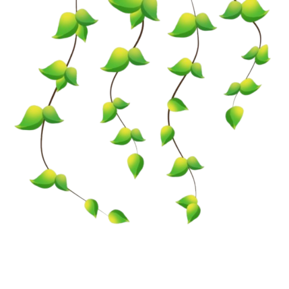
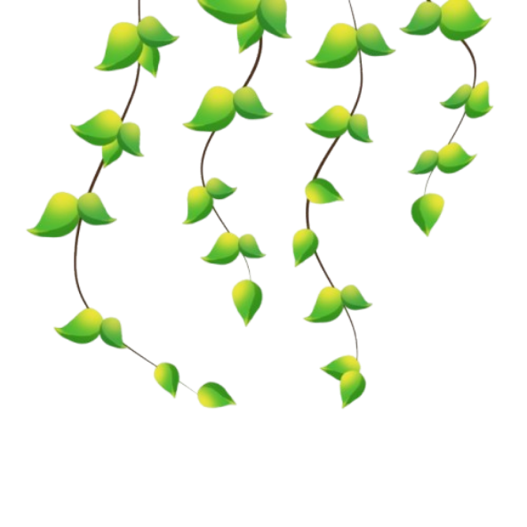

Bem-vindo à fase das montanhas!
 

Angry Birds, também conhecido como Angry Birds Classic, é o jogo de quebra-cabeça e estratégia que deu início a uma das maiores franquias da história dos jogos para celular.
criado pela empresa finlandesa Rovio Entertainment e lançado em 11 de dezembro de 2009. Ele se tornou um dos maiores fenômenos da história dos jogos para celular, conquistando milhões de pessoas ao redor do mundo. Tudo começou quando a Rovio, que era uma pequena desenvolvedora de jogos e estava passando por dificuldades financeiras, precisava criar algo novo e marcante. Um dos designers da empresa, chamado Jaakko Iisalo, apresentou o desenho de alguns pássaros redondos, sem asas nem pernas, mas com expressões muito bravas. A ideia chamou a atenção da equipe, que decidiu transformar aqueles personagens em protagonistas de um jogo simples, mas divertido, que acabou mudando o futuro da empresa. Em Angry Birds Clássico, a história é bem simples: um grupo de porcos verdes rouba os ovos dos pássaros, e eles ficam furiosos. A missão do jogador é ajudar as aves a recuperar os ovos usando um estilingue gigante para arremessá-las contra as construções onde os porcos estão escondidos. O objetivo é destruir todas as estruturas e derrotar os inimigos em cada fase. A jogabilidade é baseada na física, o que significa que a força e o ângulo do lançamento influenciam o resultado do tiro, tornando cada jogada única. Essa mecânica simples, mas desafiadora, é uma das razões que fizeram o jogo ser tão viciante. Cada pássaro possui uma habilidade especial. O Red, o pássaro vermelho, é o mais conhecido e símbolo principal do jogo. O Chuck, o amarelo, acelera no ar quando o jogador toca na tela. O Bomb, o preto, explode ao colidir com as construções. Os Blues, três passarinhos azuis, se separam em pleno voo. A Matilda, a branca, solta ovos explosivos, e o Terence, o vermelho gigante, causa grandes destruições com seu tamanho e força. A combinação entre esses personagens e as fases criativas fez com que o jogo se tornasse extremamente divertido. O sucesso foi enorme. Angry Birds Clássico começou no iPhone, mas logo foi lançado para Android, PC e outras plataformas. Em pouco tempo, atingiu mais de um bilhão de downloads, tornando-se o jogo pago mais popular da história dos smartphones naquele período. O sucesso foi tão grande que o jogo ultrapassou as telas e virou uma marca global, inspirando brinquedos, roupas, livros, séries animadas, filmes e até parques temáticos. Mesmo assim, foi o jogo original, o clássico de 2009, que ficou marcado na memória dos jogadores por sua simplicidade e diversão. Com o passar dos anos, o jogo original acabou sendo removido das lojas de aplicativos por causa de mudanças tecnológicas, mas o público pediu tanto por seu retorno que, em 2022, a Rovio lançou novamente o jogo com o nome “Rovio Classics: Angry Birds”. Essa nova versão manteve tudo o que tornava o original especial: os mesmos pássaros, as mesmas fases e o mesmo estilo visual, mas atualizada para funcionar nos celulares modernos. Isso mostrou como o amor dos fãs pelo Angry Birds clássico continuava forte mesmo depois de mais de uma década. Angry Birds Clássico é considerado um marco na história dos videogames. Ele mostrou que um jogo simples, com boa ideia e personagens carismáticos, pode conquistar o mundo. Seu sucesso ajudou a popularizar os jogos para celular e inspirou muitos outros desenvolvedores a criarem experiências parecidas. Até hoje, é lembrado como um dos maiores exemplos de criatividade e diversão dos tempos modernos, um verdadeiro símbolo da era dos smartphones.